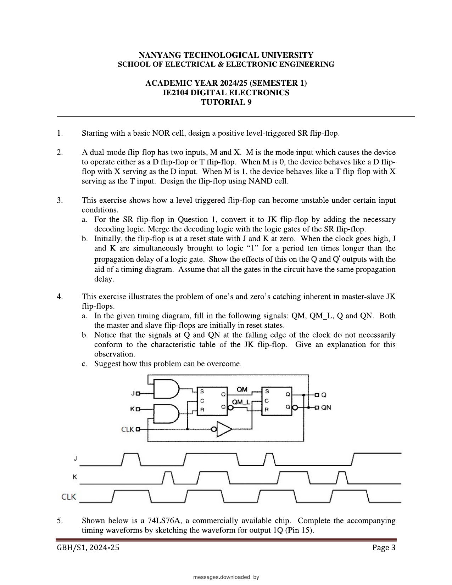
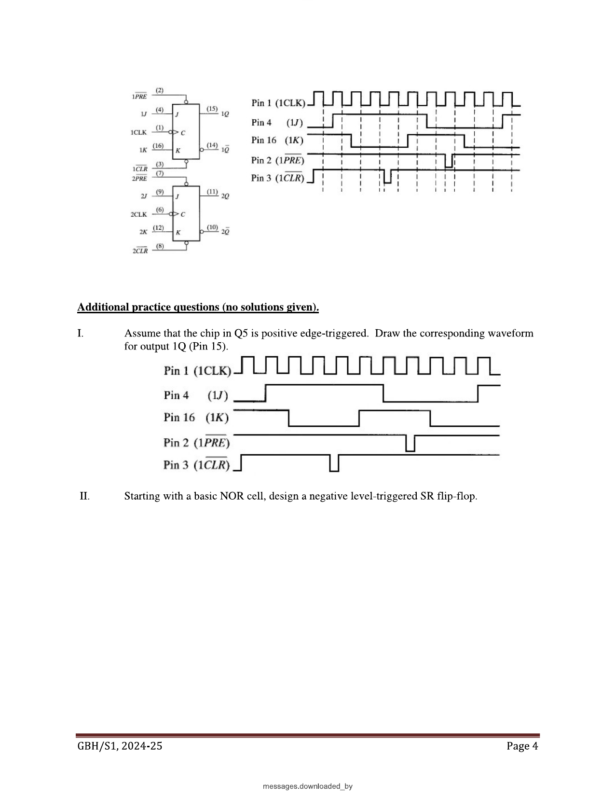

Week 9 — Flip-Flop Design Practice & the Mealy/Moore Models
Lecture: "Sequential Circuits" (pages 47–58) · Tutorial 9
- FSM analysis & design: 11 parts, 7/7 papers, 124 of 700 marks (≈ 18 marks per paper) → see these questions with solutions.
- The 2025-26 S2 paper gave 20 marks to one analysis question (Q3a): excitation equations → state table → diagram.
This page interleaves each idea with the question that tests it — learn a small piece, then use it immediately. Prefer one long read top-to-bottom instead? → Classic layout
Why sequential circuits deserve a name of their own
A big class of real problems needs a system that reacts differently to the same input depending on what's happened before — a lift that only opens its doors when it has actually arrived at a floor, a vending machine that only dispenses once enough coins have been inserted. Combinational logic literally cannot do this, because it has no way to know "what happened before". A circuit with at least one feedback path from a memory element back to its own inputs is called a Finite State Machine (FSM) — at any instant, it is in exactly one of a finite number of named states, and it moves between states in response to inputs.
Synchronous vs. asynchronous sequential circuits
| Synchronous | every state change happens at the same shared moments, dictated by a clock signal. Built from flip-flops (this course's main focus). |
|---|---|
| Asynchronous | state can change the instant an input changes, with no clock at all — essentially a combinational circuit with feedback. (You'll meet this again briefly with asynchronous counters.) |
The general model: inputs, outputs, present state, next state
What it calculates: the next-state and output values for a synchronous FSM, purely as functions of the current inputs x and present state y. When to use it: as the general framework before deciding whether the output decoder z is allowed to see x directly (Mealy) or only y (Moore) — the choice explored in the next concept.
| x1…xn | the external inputs to the whole system, right now. |
|---|---|
| y1…yr | the present state — literally just the current outputs of the memory flip-flops. |
| Y1…Yr | the next state — the values about to be clocked into those same flip-flops, computed combinationally from x's and y's. |
| z1…zm | the outputs — computed by a separate output decoder, again purely combinationally from x's and y's. |
Everything in a synchronous FSM boils down to two combinational blocks (the next-state decoder and the output decoder) plus a bank of flip-flops holding y. The only real design choice left is which inputs the output decoder is allowed to look at — and that single choice is the entire difference between the two models below.
Mealy model: output depends on input AND state
In a Mealy machine, the output decoder is given both x and y — so the output can react within the very same clock cycle that an input changes, without waiting for the state itself to move.
Moore model: output depends ONLY on state
In a Moore machine, the output decoder only ever looks at y — so the output cannot change until the state itself changes, which (in a synchronous design) only happens on a clock edge.
State diagrams: the "X/Z" notation
A circle is a state; an arrow from state A to state B labelled "X/Z" means: while in A, if input X occurs, move to B and output Z. For a Moore machine, since Z doesn't depend on X, the output is instead written once, attached to the state itself (often inside or beside the circle), not on the arrows.
State tables: the same information, tabulated
List every current state down the left, every input combination across the top; each cell holds "next state, output" (Mealy) or just "next state" (with a separate one-output-per-state column, for Moore).
| Present state | X=0 | X=1 |
|---|---|---|
| A | B, 1 | C, 0 |
| B | B, 0 | A, 1 |
| C | A, 0 | C, 0 |
Reading this table (Mealy-style "next state, output"): "when in state A, on input X=0, go to B and output Z=1." Nothing more mysterious than a lookup table.
Worked example: tracing a Mealy machine through an input sequence
Using the table above, starting in state A, feed in X = 0 1 1 0 1 0 1 1 0 0 one bit per clock pulse, and just walk the table one row at a time — this is exactly the same mechanical "trace it through" skill as truth tables and K-maps, just spread out across clock pulses instead of all at once:
Try it yourself first — trace the state and output sequence, then reveal the completed trace
| Clock pulse | 0 | 1 | 2 | 3 | 4 | 5 | 6 | 7 | 8 | 9 | 10 |
|---|---|---|---|---|---|---|---|---|---|---|---|
| Present state | A | B | A | C | A | C | A | C | C | A | B |
| Input X | 0 | 1 | 1 | 0 | 1 | 0 | 1 | 1 | 0 | 0 | |
| Output Z | 1 | 1 | 0 | 0 | 0 | 0 | 0 | 0 | 0 | 1 |
e.g. pulse 0: state A, X=0 → table says "B,1" → output Z=1, and the state that will be present at pulse 1 is B. Pulse 1: state B, X=1 → table says "A,1" → Z=1, next state A. Keep repeating this one step at a time. Final output sequence: Z = 1100 0000 01, ending in state B.
Timing diagrams: Mealy's hidden hazard
Because a Mealy output is a function of the input directly, it can change the instant the input changes — even in the middle of a clock cycle, with no state change involved at all. If the input is noisy or changes at an inconvenient moment, the output can glitch momentarily before settling. The practical fix used in real systems: only sample a Mealy machine's output once everything has settled after the active clock edge, never in the middle of a cycle.
A Moore output has no such hazard: since it only depends on y (the flip-flop outputs), and those only change on a clock edge, the Moore output can only ever change on a clock edge too — it is inherently glitch-free between clock edges. The trade-off: a Moore machine often needs an extra state (and hence an extra clock cycle of latency) to produce a response that a Mealy machine could have produced immediately, because the output has to wait for the state itself to arrive somewhere new.
🔗 Practice: Tutorial 9 — applying Week 8's flip-flop toolkit
Every question below actually tests flip-flop design skills from Week 8 (SR, JK, master-slave, real IC datasheets), not this week's new Mealy/Moore theory above — that's genuinely what Tutorial 9 covers, so each question's own "Tests" link points back to Week 8. Try each one yourself before opening the reveal.
Starting with a basic NOR cell, design a positive level-triggered SR flip-flop.
Try it yourself first, then reveal the answer
This is exactly the "clocked SR flip-flop" construction from Week 8: take the cross-coupled NOR cell, and put a 2-input AND gate in front of each of S and R, with Clk as the second input on both. "Positive level-triggered" specifically means the AND gates use Clk directly (not Clk̄) — the cell is transparent for as long as Clk sits at logic 1, and holds whenever Clk=0. (Extra practice question II on the same tutorial page asks for the negative-level-triggered version — same idea, but feed Clk̄ into the AND gates instead, so the cell is transparent while Clk=0.)
A dual-mode flip-flop has inputs M (mode) and X. M=0: behaves as a D flip-flop (D=X). M=1: behaves as a T flip-flop (T=X). Design it using a NAND cell.
Try it yourself first, then reveal the answer
Write the desired next state directly as a piecewise definition, then combine the two cases into one formula using M as a selector — this is just a 2-to-1 multiplexer selecting between "D-mode" and "T-mode" behaviour (Week 6 skills, reused here):
I verified this against all 8 rows of (M,X,Qt) by brute force — it reduces correctly to Qt+1=X whenever M=0, and to Qt+1=X⊕Qt whenever M=1, exactly as required.
Now convert this into Set/Reset signals using the same excitation shortcut from Week 8: for any flip-flop, a valid (SR=0-respecting) choice is S = Qt+1 and R = Q̄t+1 — assert Set only when you want next=1, Reset only when you want next=0, which by definition can never both be true at once:
Since the target is a NAND cell, its inputs are active-low (S̄,R̄) — so simply feed S and R above through one more inverter each (or, more efficiently, redesign the AND/OR gates above directly as NAND/NOR combinations) before the cross-coupled NAND cell, exactly matching the "Input Forming Logic + Basic Cell" structure from the Week 8 slides.
(a) Convert the SR flip-flop from Q1 into a JK flip-flop by adding decoding logic. (b) With J=K=1 held for 10× a gate's propagation delay while the clock is high, show the effect on Q and Q̄, assuming every gate in the circuit shares the same propagation delay.
Try it yourself first, then reveal the answer
(a) Exactly the JK construction from Week 8: AND Q̄ together with J (and with Clk) to form the Set path, and AND Q together with K (and with Clk) to form the Reset path, feeding into the same NOR cell from Q1 — merging the decoding AND gates directly with the existing clock-gating AND gates (3-input ANDs: Clk·J·Q̄ and Clk·K·Q) rather than stacking two separate gates in series.
(b) This is precisely the same "gated ring oscillator" idea as Tutorial 8 Q1, just built from a JK loop instead of a NAND+inverter chain. With J=K=1 and Clk=1, the feedback loop (through the AND-decode gate and the two cross-coupled NOR gates) has an odd number of inversions, so — just like an odd inverter ring — it cannot settle: it keeps toggling roughly every 2 gate-delays for as long as the enabling condition (Clk=1, J=K=1) persists. Over a window of 10 gate-delays, that's on the order of 5 toggles — and because the window length (10d) is not obviously a whole multiple of the toggle period in every real circuit, the flip-flop can end up "cut off" mid-toggle when the clock finally falls, landing on whichever state the race happened to settle in at that instant. This is the entire point of the exercise: a bare level-triggered flip-flop's final state, after a long enough pulse, is not reliably predictable from J and K alone — which is exactly the motivation for the master-slave structure (Week 8 slides), where the slave only ever samples the master once, after the master has already stopped moving.

Fill in QM, QM_L, Q, QN on the given timing diagram; explain why Q/QN don't necessarily match the JK characteristic table at the falling edge; suggest a fix.
Try it yourself first, then reveal the answer
Work through it in this order, matching the master-slave structure from Week 8: while Clk=1, the master cell is transparent, so QM continuously follows whatever J/K decode to, for the entire high phase — including reacting to any brief glitch on J or K, even one that returns low again before the clock falls. QM_L (the inverted/latched signal feeding the slave's enable) only flips once Clk itself falls. At the falling edge, the slave copies whatever QM happens to be holding at that instant through to Q and QN — not necessarily what J,K "currently" say, because J/K may have already changed again since the master last updated.
Why Q/QN can disagree with the plain characteristic table: the characteristic table assumes J,K are stable and known at the moment of the transition — but the master-slave's real output reflects whatever the master caught at any point during the whole high phase, which can be a momentary 1 that J or K only held for a fraction of that time (a "1's catch" or "0's catch"). Reading off J,K's value at the exact instant of the falling edge and expecting it to explain Q's new value can therefore give the wrong answer.
Fix: use true edge-triggering (Pulse Transition Detector, Week 8) instead of level-sensitive master/slave stages — since the master only ever gets a vanishingly narrow window to sample J,K, there's no time window left for it to "catch" a spurious mid-cycle glitch.
Because this specific exercise depends on reading exact pulse positions off a hand-drawn J/K/CLK waveform, the reliable way to finish your own copy is to apply exactly the "master tracks continuously while Clk=1, slave copies once at the falling edge" rule at each labelled edge in turn — that tracing skill, not the specific pixel positions, is what's being examined.

The 74LS76A is a real dual JK flip-flop IC. Complete the waveform for output 1Q (Pin 15).
Try it yourself first, then reveal the answer
Read the symbol carefully before touching J/K at all: the clock input has both a small triangle and a bubble, meaning 1CLK is negative-edge-triggered — 1Q only updates at each falling edge of Pin 1, using whatever 1J (Pin 4) and 1K (Pin 16) are doing at that instant, per the ordinary JK characteristic table (hold/reset/set/toggle). Separately, 1PRE̅ (Pin 2) and 1CLR̅ (Pin 3) are drawn with bars, i.e. active-low and, being the asynchronous Preset/Clear from Week 8, they override 1Q immediately, the instant they're pulsed low, completely independent of the clock — wherever the given waveform shows a brief low glitch on Pin 2, 1Q snaps to 1 right then; wherever Pin 3 dips low, 1Q snaps to 0 right then.
To finish your own copy: scan left to right — at every regular falling edge of 1CLK where PRE̅/CLR̅ are both high (inactive), apply the JK table using J,K at that instant; at every point where PRE̅ or CLR̅ dips low, override 1Q immediately to 1 or 0 respectively regardless of the clock, then resume normal JK behaviour once they return high. (The tutorial's own follow-up practice question I re-asks this exact chip assuming positive-edge triggering instead — redo the same procedure but at rising edges, to feel the difference a single bubble on a datasheet symbol makes.)
✍️ Write This Down
Copy these into your own notes:
- FSM general model: output z=g(x,y), next state Y=h(x,y) — both purely combinational functions of inputs x and present state y.
- Synchronous: clocked, all state changes simultaneous. Asynchronous: no clock, changes any time an input changes.
- Mealy: output depends on input AND state (z=g(x,y)) — reacts immediately, but can glitch mid-cycle; sample only after settling.
- Moore: output depends ONLY on state (z=g(y)) — glitch-free between clock edges, but may cost an extra state/cycle of latency.
- State diagram notation: arrows labelled X/Z for Mealy; Moore's output is attached to the state itself, not the arrow.
- Any flip-flop can be synthesised from its characteristic equation using S=Qt+1, R=Q̄t+1 (guaranteed SR=0) — the general recipe behind Tutorial 9 Q2's dual-mode D/T design.
- A bare level-triggered (or master-slave) flip-flop can be unstable/unpredictable if its enabling condition (Clk high, or J=K=1) is held open too long relative to one gate delay — the fix is always tighter edge-triggering.
- Real IC symbols: a triangle on the clock pin = edge-triggered; add a bubble = falls on the opposite edge. A bar over PRE/CLR = active-low, asynchronous, and overrides the clock entirely.
🟥 Redstone Build: Mealy vs. Moore Machines
Every redstone "state machine" build (a sequential lamp show, a combination lock, a crafting-station door sequencer) is secretly either Mealy or Moore under the hood — this is a great chance to notice which one you've been building all along.
Build 1 — A Moore-style sequencer (glitch-free, output tied only to state)
- Build a small bank of memory cells (your SR/D latches from Week 8) to hold a 2-bit state (00, 01, 10, 11).
- Wire each of the 4 possible state combinations to its own fixed lamp pattern, completely independently of any lever — this directly mirrors "Moore's output decoder only looks at y, never x".
- Advance the state on a repeater clock (Week 3), and confirm the lamps only ever change exactly on a clock tick, never in between — even if you flip an input lever mid-cycle, nothing visibly changes until the next tick advances the state.
Build 2 — A Mealy-style reactive circuit (output tied to input + state)
- Take the same state memory from Build 1, but this time wire the output lamp directly through a combinational gate that also takes a lever (input) as a second input — e.g. the lamp lights only if state=01 and the lever is currently on.
- Flip the lever on and off rapidly without touching the clock, and watch the lamp respond immediately, mid-cycle, with no need to wait for the next clock tick — a direct, physical demonstration of Mealy's "output changes the instant the input changes" behaviour (and, if you flick the lever fast enough, you can even see the kind of brief spurious flicker the slides warn about).
Stretch goal: build a 3- or 4-state traffic-light sequencer (Moore-style, state advances on a slow repeater clock, each state drives a fixed red/yellow/green lamp combination) — a satisfying, very literal build of the "traffic light" analogy used above.